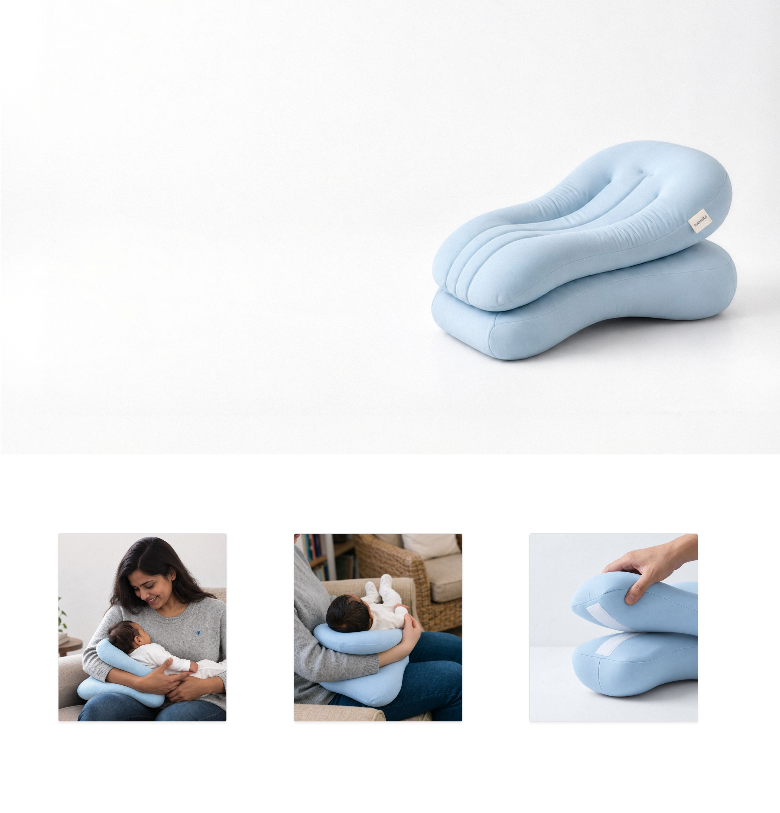
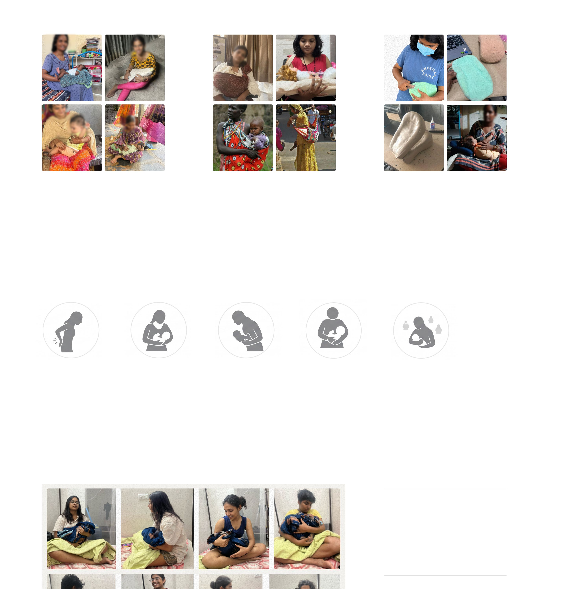
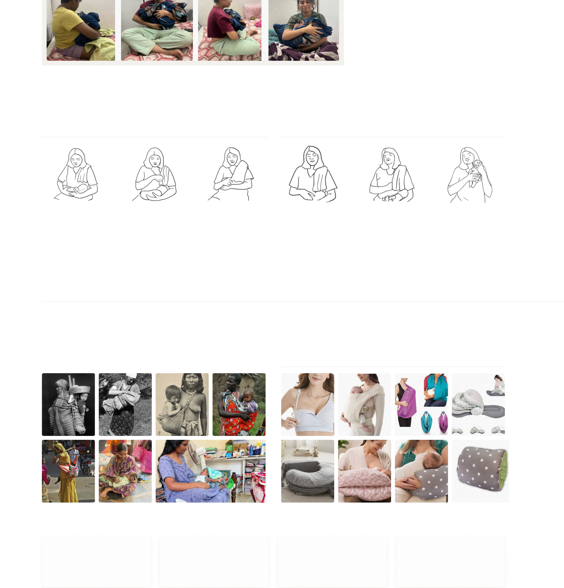
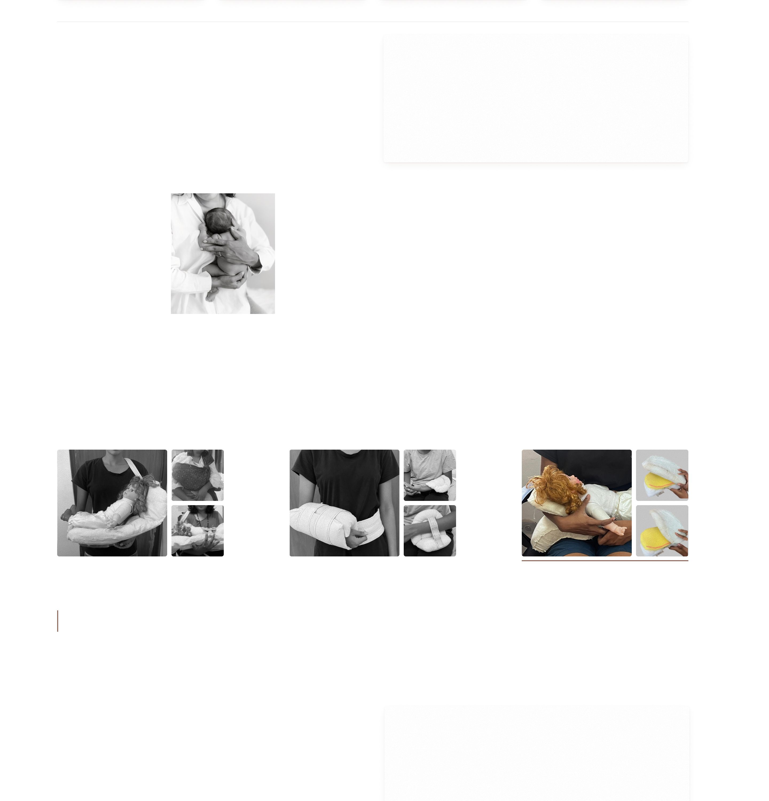
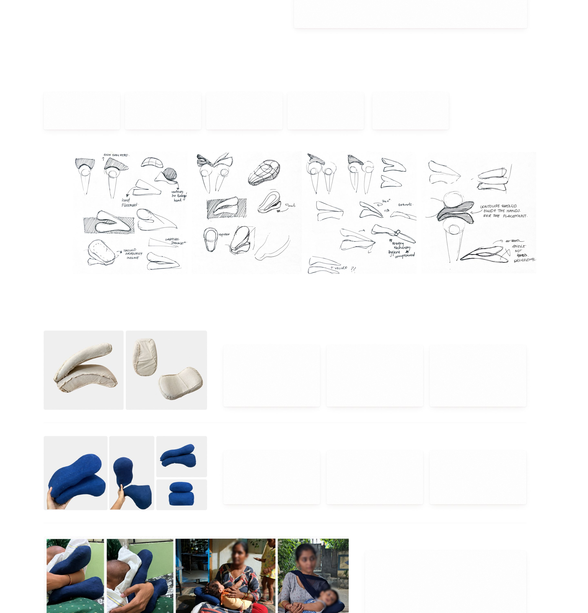
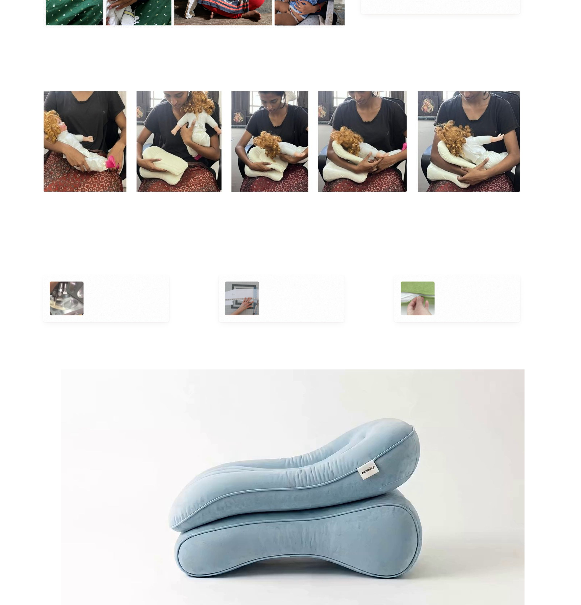

Next project
KAI







MamaLaP
Breastfeeding support, designed for mobility
Simple Product Design
Role
Timeline
Skills
2025
Product Designer
7 weeks
Product Design | Ergonomic Design | Prototyping
MamaLap is a compact breastfeeding pillow designed to raise the baby to a better feeding position, providing a stable resting surface on the mother’s lap for comfortable feeding, including on the go.
Natural positioning
Arm relief
Detachable headrest
Supports upright feeding postureEasy to install
Supports the baby’s weight preserves feeling of holding
A base cushion and a detachableheight adjustment flexibility in positioning.
Overview
Understanding the User
Exploring Support
Prototyping & Testing
Observing feeding behaviours and identifying physical discomfort.
Exploring different ways to support the mother and baby during feeding.
Building and testing foam prototypes to refine comfort, positioning and form.
Lack of support makes breastfeeding harder.
Without adequate support, mothers adjust their posture and rely on their arms to hold the baby, causing discomfort, awkward positioning, and latching difficulties affecting the comfort and intimacy of breastfeeding.
72.3%
30%
57%
80%
42%
Difficulty in Positioning
Back and Shoulder Pain
Arm and Wrist Pain
Leaning Forward Unnaturally
Lack of Privacy
Understanding Through Experience
To empathise with caregivers, we recreated the experience of holding a baby while performing everyday tasks.
Simulation
5 kg weighted bottle and blanket wrapped · 10-minute holding simulation · everyday tasks
Key Insights
Frequent repositioning to relieve discomfortLap became a natural resting pointTwo-handed tasks became difficultForward leaning
Feeding Sequence
Before & during the feed
After the feed
01
02
03
04
05
06
Opens kurti, covers with a shawl
Brings baby to the breast to latch
Lifts baby to her shoulder to burp
Baby rests on her lap
Closes her kurti
Moves baby back to her lap
Breastfeeding involves repeated adjustments to clothing, privacy and baby positioning throughout the feeding process.
Feeding in public is shorter (5–7 minutes) than at home (25–30 minutes), indicating the setting affects feeding duration.
Understanding existing products and everyday solutions
I looked at existing breastfeeding products, their forms and functions, as well as the informal ways mothers adapt clothing and everyday objects for feeding and carrying.
Everyday & traditional solutions
Products on the market
Key insights
01
02
03
04
Existing products address comfort, privacy and mobility separately.
Conventional feeding pillows are bulky and home-oriented.
Mothers improvise with dupattas, sarees and towels for privacy.
Everyday solutions address individual needs, not the full feeding experience.
Brief
Design requirements
One-handed setup — the other arm is holding the baby
Design a compact lap-based feeding pillow for first-time mothers feeding babies aged 0–6 months, enabling better positioning and more comfortable feeding at home and on the go
Compact and portable — feeds happen outside the home too
Stable positioning — stops constant repositioning mid-feed
Improved feeding posture — mothers lean forward to latch
Hygiene and cleanability — used daily, close to milk and spit-up
Design principle
“The product should preserve the feeling of holding the baby, strengthening their emotional bond and helping both feel calm and secure.”
Quick mockups for weight distribution
Low-fidelity mockups to test where the baby's weight should rest, before sketching.
01 Shoulder sling
02 Hip belt + arm cushion
03 Lap system
Bulky and difficult to wear.
Slow to set up, restrictive, unstable.
Most intuitive and accessible.
Key insight
The lap proved the most intuitive and accessible support. Two-part form
Why the lap
Why it works
Elevates the baby s head without lifting the entire body.
01
Keeps the mother’s hands free for feeding.
02
Observation from primary research
Avoids abdominal pressure from wraparound pillows.
03
Many mothers sat cross-legged, lifting the lap and bringing the baby’s head up towards the breast.
Fits different body sizes without straps.
04
Requires minimal setup for feeding on the go.
05
Form Explorations
01
02
03
04
06
Compact form
Ergonomic contours
Intuitive hand placement
Gentle, gradual inclination
Two-part construction
Prototyping and Testing
01 Carved foam
Tested
Feedback
Change
Foam density and thigh curve, with classmates across the 5th–95th percentile of thigh thickness.
Slope too steep. Headrest didn’t support the head. Hard to get hands in.
Gentler slope, refined curves, a new headrest and more room for hands.
02 Working prototype
Built
Tested
Result
Curves fitted to stomach and thigh, hand grooves, a draped Lycra cover and Velcro joins.
With mothers feeding their own babies.
First working prototype, ready for real feeds.
User testing · prototype 02
Feedback
· Hands weren’t placed where intended
· The incline can be lower
· Hands need more grooves to slide in
Next change
Lower the incline and add grooves that guide the hands.
Final User Testing
01
02
03
04
05
Baby on her lap
Pillow placed one-handed
Baby lowered onto pillow
Position adjusted
Settled for feeding
Manufacturing
01 Foam core
02 Inner cover
03 Outer cover
PU foam, moulded or CNC-cut, then quality-checked.
Waterproof PUL, cut to pattern and sealed, then checked.
Cotton (muslin or jersey) with a zipper, removable and washable.
Foam core sealed inside the waterproof inner cover, then slipped into the washable outer cover. Polyester thread throughout.
Assembly
Learnings
Small behavioural observations can reveal meaningful insights that shape the entire product concept.
User testing helped me understand how users interact with the product differently from what I had initially intended.
Iterative prototyping and user testing helped me refine the product based on real interactions, making it more intuitive and usable.
Next project
KAI